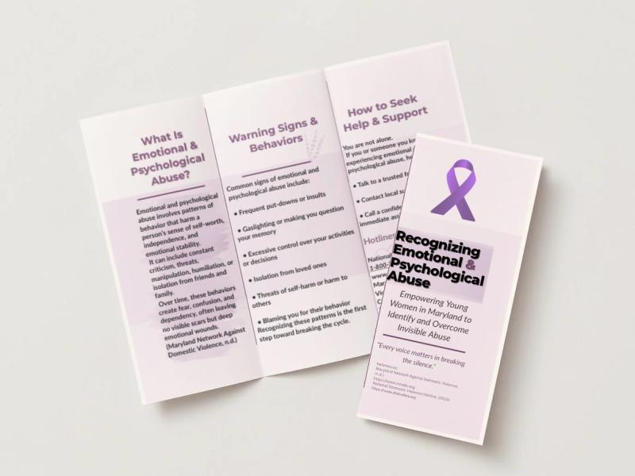
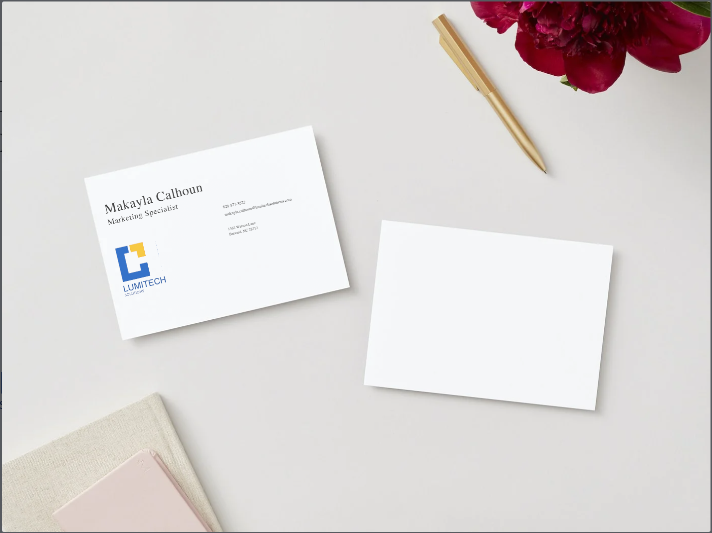
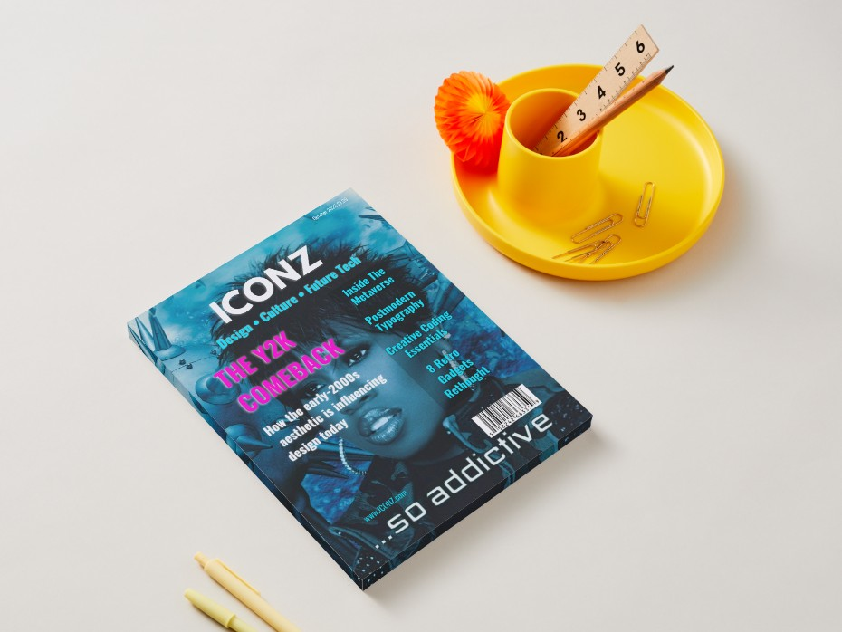

Community Awareness Brochure
An informational design focused on clarity and accessible communication.
The portfolio / Selected projects
From luxury digital experiences to healthcare analytics, here is a closer look at what I have created and why.
Featured case study / 01
Brand identity / Web design / Interaction
An elevated skincare shopping concept with thoughtful product experiences, refined typography, and interactive details.
My focus: Visual direction, responsive layout, and product interactions.
Featured case study / 02
Healthcare / Tableau / Data storytelling
A healthcare operations dashboard translating fictional appointment data into clear, actionable visual insights.
My focus: Dashboard design, data interpretation, and clear presentation.
Featured case study / 03
Hospitality / Web development / UX
A luxury fine-dining concept featuring an interactive menu, atmospheric visuals, and a carefully designed digital experience.
My focus: Hospitality branding, user experience, and interactive menus.
Earlier design explorations
Additional work exploring visual communication, brand identity, layout, and typography.

An informational design focused on clarity and accessible communication.

A coordinated visual identity across stationery and printed brand touchpoints.

Visual hierarchy and composition in a digital design exploration.

A study in typography, structure, and editorial presentation.